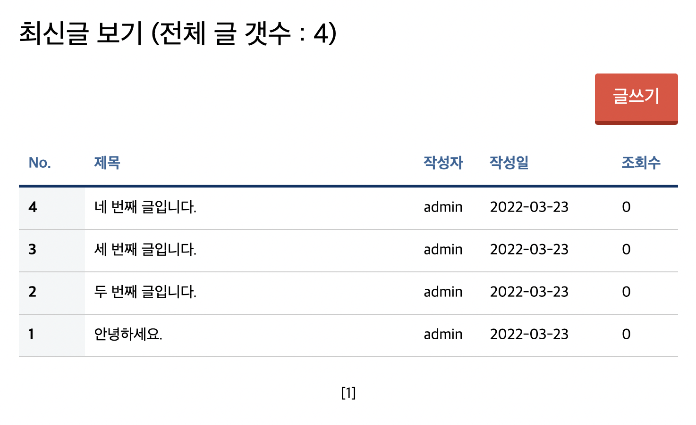

JAVA Servlet 프로젝트) Cafe(웹 사이트) 만들기 12 - 게시판 글쓰기 기능 만들기
개발환경
- MacBook Air (M1, 2020)
- OpenJDK 8
- Eclipse 2021-12
- tomcat 8.5
- MySQL Workbench 8.0.19
기간
- 2022.3.4 ~ 2022.4.6
주제
- 웹 백엔드 수업 중 중간 과제로 개인 프로젝트를 진행하게 되었다.
- 회원가입/로그인/탈퇴 등 기본적인 회원관리 시스템을 가진 웹 사이트를 만드는 것이다. 주어진 기한은
한 달 - 나는
다음 카페를 소규모로 만들어 보기로 했다. 평소 자주 이용하기도 했고 과제의 평가 기준에서 요구하는 기능들을 다 담고 있기도 했기 때문에 이번 기회에 구현해 보면 그동안 배운 것들을 활용하기에 좋을 거 같았다. - 평가 기준에 사이트의 디자인 구현(HTML/CSS 등 프론트엔드)은 포함되지 않기 때문에 본인이 쓰고 싶은 HTML/CSS 템플릿을 구한 뒤 회원 관리 기능을 구현하면 된다.
진행상황
- 엊그제 저녁에 했던 맥
Monterey 12.3버전 업데이트 이후로MySQL Workbench가 실행되지 않아서 업데이트 직전 백업본으로 다운그레이드를 했다. 맥 초기화를 하고OS를 새로 설치하는 과정에서 오류가 생겨서(아침에 수리센터 문 열자마자 가야 하나 싶어서 식은땀이 났다) 예상보다 시간이 오래 걸리는 바람에 어제는 작업을 많이 하지 못 했다. 🥲 맥 업데이트는 함부로 하지 말아야 하는 것이란 걸 배웠다… - 오늘은 게시판에 글을 쓰면 글 목록을 새로 업데이트 해서 보여주는 기능을 만들 것이다.
boardWrite.jsp
<%
String id = (String)session.getAttribute("id");
if (null == id)
response.sendRedirect("./login.me");
%>
<section class="MOD_SUBNAVIGATION1">
<div data-layout="_r">
<jsp:include page="../inc/leftNav.jsp"></jsp:include>
<div data-layout="al-o1 de-o2 de10" class="MOD_SUBNAVIGATION1_Page">
<h2>게시글 작성</h2>
<form name="write" action="./BoardWriteAction.bo" method="post" onsubmit="return finalCheck();">
<input type="hidden" name="id" value="<%=id%>">
<div class="formRow">
<label for="MOD_TEXTFORM_NameField">제목 </label><input type="text" name="title" id="title">
</div>
<div class="formRow">
<label for="MOD_TEXTFORM_MsgField">내용 </label>
<textarea id="MOD_TEXTFORM_MsgField" name="content"></textarea>
</div>
<button type="submit" class="btn">글 등록</button>
</form>
</div>
</div>
</section>
- 게시글의 작성 정보를
Action class로 전달할 때 누가 쓴 글인지 구분할 수 있도록 아이디 정보도 함께 넘겨준다. - 아이디 정보는 로그인 시 세션에 저장하며 이 페이지에서 보여줄 필요는 없으니까
hidden타입으로 전달한다.
BoardFrontController.java
...생략
// 2. 가상주소 매핑
Action action = null;
ActionForward forward = null;
if (command.equals("/BoardWriteAction.bo"))
{
System.out.println("C : /BoardWriteAction.bo 호출");
action = new BoardWriteAction();
try {
forward = action.execute(request, response);
}
catch (Exception e) {
e.printStackTrace();
}
}
...생략
글 등록버튼을 누르면컨트롤러로 와서DB에 글을 저장하는 동작을 수행하는Action class로 연결된다.
BoardDTO.java
package com.project.cafe.board.db;
import java.sql.Date;
public class BoardDTO
{
int num;
String id;
String title;
String content;
int readcount;
int re_ref;
int re_lev;
int re_seq;
Date date;
String ip;
String file;
public int getNum() {return num;}
public void setNum(int num) {this.num = num;}
public String getId() {return id;}
public void setId(String id) {this.id = id;}
public String getTitle() {return title;}
public void setTitle(String title) {this.title = title;}
public String getContent() {return content;}
public void setContent(String content) {this.content = content;}
public int getReadcount() {return readcount;}
public void setReadcount(int readcount) {this.readcount = readcount;}
public int getRe_ref() {return re_ref;}
public void setRe_ref(int re_ref) {this.re_ref = re_ref;}
public int getRe_lev() {return re_lev;}
public void setRe_lev(int re_lev) {this.re_lev = re_lev;}
public int getRe_seq() {return re_seq;}
public void setRe_seq(int re_seq) {this.re_seq = re_seq;}
public Date getDate() {return date;}
public void setDate(Date date) {this.date = date;}
public String getIp() {return ip;}
public void setIp(String ip) {this.ip = ip;}
public String getFile() {return file;}
public void setFile(String file) {this.file = file;}
@Override
public String toString() {
return "BoardDTO [num=" + num + ", id=" + id + ", title=" + title + ", content=" + content + ", readcount="
+ readcount + ", re_ref=" + re_ref + ", re_lev=" + re_lev + ", re_seq=" + re_seq + ", date=" + date
+ ", ip=" + ip + ", file=" + file + "]";
}
}
- 게시글 정보를 저장하기 위한 클래스로
DB에 만든 테이블의 각 컬럼명에 대응되는 변수를 모두 만들어 주었다.
boardWriteAction.java
package com.project.cafe.board.action;
import javax.servlet.http.HttpServletRequest;
import javax.servlet.http.HttpServletResponse;
import com.project.cafe.action.Action;
import com.project.cafe.action.ActionForward;
import com.project.cafe.board.db.BoardDAO;
import com.project.cafe.board.db.BoardDTO;
public class BoardWriteAction implements Action
{
@Override
public ActionForward execute(HttpServletRequest request, HttpServletResponse response) throws Exception
{
System.out.println("M : BoardWriteAction - execute() 호출");
// 한글처리
request.setCharacterEncoding("UTF-8");
// 파라메터를 DTO에 저장
BoardDTO dto = new BoardDTO();
dto.setContent(request.getParameter("content"));
dto.setId(request.getParameter("id"));
dto.setTitle(request.getParameter("title"));
// 사용자 ip주소 저장
dto.setIp(request.getRemoteAddr());
System.out.println("M : " + dto);
// DB에 DTO 보내서 저장
BoardDAO dao = new BoardDAO();
dao.insertPost(dto);
// 완료되면 글 목록 페이지로 이동
ActionForward forward = new ActionForward();
forward.setPath("./boardList.bo");
forward.setRedirect(true);
System.out.println("M : 글쓰기 완료. 페이지정보 리턴");
return forward;
}
}
Action class에서DB와 연결해서insert작업을 수행한다.- 글쓰기 동작이 완료되면 글 목록 페이지로 이동한다.
BoardDAO.java
package com.project.cafe.board.db;
import java.sql.Connection;
import java.sql.PreparedStatement;
import java.sql.ResultSet;
import java.sql.SQLException;
import javax.naming.Context;
import javax.naming.InitialContext;
import javax.sql.DataSource;
public class BoardDAO
{
// DB 연결동작 처리
private Connection con = null;
private PreparedStatement pstmt = null;
private ResultSet rs = null;
private String sql = "";
// getCon()
private Connection getCon() throws Exception
{
// 외부파일 불러오기 (META-INF/context.xml)
Context ctxInit = new InitialContext();
DataSource ds = (DataSource) ctxInit.lookup("java:comp/env/jdbc/cafe");
con = ds.getConnection();
System.out.println("DAO : 1.2. DB 연결 완료");
return con;
}
// getCon()
// closeDB()
public void closeDB()
{
try {
if (null != rs) rs.close();
if (null != pstmt) pstmt.close();
if (null != con) con.close();
}
catch (SQLException e) {
e.printStackTrace();
}
}
// closeDB()
// insertPost(dto)
public void insertPost(BoardDTO dto)
{
int postNum = 0;
try {
// 1.2. DB 연결
con = getCon();
// 3. sql 작성 & pstmt 객체
// 이번 차례에 DB에 저장될 글번호 계산
sql = "select max(num) from cafe_board";
pstmt = con.prepareStatement(sql);
if (rs.next())
postNum = rs.getInt(1) + 1;
// 3. 데이터 삽입용 sql 작성 & pstmt 설정
sql = "insert into cafe_board(num, id, title, content, readcount, re_ref, re_lev, re_seq, date, ip, file) "
+ "values(?,?,?,?,?,?,?,?,now(),?,?)";
pstmt = con.prepareStatement(sql);
// ? 채우기
pstmt.setInt(1, postNum);
pstmt.setString(2, dto.getId());
pstmt.setString(3, dto.getTitle());
pstmt.setString(4, dto.getContent());
pstmt.setInt(5, 0); // 처음에 조회수 0
pstmt.setInt(6, postNum); // 답글의 그룹. 일반글의 글번호와 동일하게 만듦
pstmt.setInt(7, 0); // 답글의 레벨. 처음엔 들여쓰기 없음
pstmt.setInt(8, 0); // 답글의 순서. 처음엔 가장 최상단
pstmt.setString(9, dto.getIp());
pstmt.setString(10, dto.getFile());
// 4. sql 실행
pstmt.executeUpdate();
System.out.println("DAO : 게시글 DB 삽입 완료");
}
catch (Exception e) {
e.printStackTrace();
}
finally {
closeDB();
}
}
// insertPost(dto)
}
DB에 게시글 데이터 삽입을 위한 함수를 만들었다.re_ref,re_lev,re_seq필드는 초기값 세팅만 해 두고 나중에 답글 기능을 구현할 때 사용할 것이다.
BoardFrontController.java
... 생략
// 2. 페이지 매핑
else if (command.equals("/boardList.bo"))
{
System.out.println("C : /boardList.bo 호출");
action = new BoardListAction();
try {
forward = action.execute(request, response);
}
catch (Exception e) {
e.printStackTrace();
}
}
... 생략
- 게시글 삽입이 완료되면
front로 와서 게시글 목록 페이지로 이동할 것이다. - 그 전에 게시글 목록을 보여줘야 하니까
DB에 접속해서 저장된 게시글 정보를 가져와야 한다. - 그래서 게시글 목록 페이지로 바로 이동하지 않고
Action class를 호출해서DB에서 정보를 가져오는 동작을 수행한다.
BoardListAction.java
package com.project.cafe.board.action;
import java.util.ArrayList;
import javax.servlet.http.HttpServletRequest;
import javax.servlet.http.HttpServletResponse;
import com.project.cafe.action.Action;
import com.project.cafe.action.ActionForward;
import com.project.cafe.board.db.BoardDAO;
import com.project.cafe.board.db.BoardDTO;
public class BoardListAction implements Action
{
@Override
public ActionForward execute(HttpServletRequest request, HttpServletResponse response) throws Exception
{
System.out.println("M : BoardListAction - execute() 호출");
// BoardDAO 객체 생성
BoardDAO dao = new BoardDAO();
// DB에 저장된 글 갯수 가져오기
int postCnt = dao.getPostCount();
// 페이징 처리 알고리즘 /////////////////////
// 한 페이지에 표시할 글 갯수
int pageSize = 10;
// 현재 페이지 정보가 몇 페이지인지 확인한 후 현재 페이지 정보를 가지고 이동
String pageNum = request.getParameter("pageNum");
if (null == pageNum)
{
// 페이지 정보가 없으면 첫페이지인 1로 설정
pageNum = "1";
}
// 페이지 정보로 시작 행 번호 계산하기 1, 11, 21, 31, ...
int curPage = Integer.parseInt(pageNum);
int startRow = (curPage - 1) * pageSize + 1;
// DB에서 글 목록 가져오기
ArrayList<BoardDTO> postList = null;
if (0 != postCnt)
{
// 한 페이지에 표시할 만큼만 글 목록을 가져오기
postList = dao.getPostList(startRow, pageSize);
}
// 하단 페이징 처리하기 //////////////////////
// 현재 글 갯수만큼 페이지 이동 번호 출력하기
// 페이지 전체 블럭 갯수 계산
int pageCnt = postCnt / pageSize + ((0 == postCnt % pageSize) ? 0 : 1);
// 한 번에 보여줄 페이지 블럭 갯수
int pageBlockCnt = 10;
// 시작 페이지블록 번호 구하기 1~10 => 1 11~20 => 11 ...
int startBlock = ((curPage - 1) / pageBlockCnt) * pageBlockCnt + 1;
// 끝 페이지블록 번호 구하기
int endBlock = startBlock + pageBlockCnt - 1;
if (endBlock > pageCnt)
endBlock = pageCnt;
// 하단 페이징 처리 끝 //////////////////////
// request 영역에 글 목록 정보 저장
request.setAttribute("postCnt", postCnt);
request.setAttribute("postList", postList);
// request 영역에 페이징 처리 정보 저장
request.setAttribute("pageNum", pageNum);
request.setAttribute("pageCnt", pageCnt);
request.setAttribute("pageBlockCnt", pageBlockCnt);
request.setAttribute("startBlock", startBlock);
request.setAttribute("endBlock", endBlock);
// 페이지 이동
ActionForward forward = new ActionForward();
forward.setPath("./contents/boardList.jsp");
forward.setRedirect(false);
return forward;
}
}
- 각 페이지마다 정해진 갯수만큼 글을 보여줄 것이기 때문에
DB에서 정해진 갯수만큼만 글을 가져온다. - 게시글 갯수에 따라서 글 목록을 보여주는 페이지를 이동할 수 있게 하기 위해서 게시판 하단에 페이지 정보를 보여주는데 필요한 정보도 함께 계산해서
request영역에 저장한다.
BoardDAO.java
... 생략
public int getPostCount()
{
int ret = 0;
try {
con = getCon();
// 전체 글 갯수 가져오기
sql = "select count(*) from cafe_board";
pstmt = con.prepareStatement(sql);
rs = pstmt.executeQuery();
if (rs.next())
ret = rs.getInt(1);
System.out.println("DAO : 총 글 갯수 " + ret);
}
catch (Exception e) {
e.printStackTrace();
}
finally {
closeDB();
}
return ret;
}
public ArrayList<BoardDTO> getPostList(int startRow, int pageSize)
{
ArrayList<BoardDTO> postList = new ArrayList<BoardDTO>();
try {
con = getCon();
// 글 자르기 : limit 시작행-1, 갯수
// 시작행-1부터 x개 만큼 가져온다.
// 정렬 : re_ref(내림차순) / re_seq(오름차순)
sql = "select * from cafe_board order by re_ref desc, re_seq asc limit ?,?";
pstmt = con.prepareStatement(sql);
pstmt.setInt(1, startRow - 1); // 시작행 - 1
pstmt.setInt(2, pageSize); // 갯수
rs = pstmt.executeQuery();
while (rs.next())
{
// 글 1개의 정보(dto)에 저장한 후 배열에 저장
BoardDTO dto = new BoardDTO();
dto.setContent(rs.getString("content"));
dto.setDate(rs.getDate("date"));
dto.setFile(rs.getString("file"));
dto.setId(rs.getString("id"));
dto.setIp(rs.getString("ip"));
dto.setNum(rs.getInt("num"));
dto.setRe_lev(rs.getInt("re_lev"));
dto.setRe_ref(rs.getInt("re_ref"));
dto.setRe_seq(rs.getInt("re_seq"));
dto.setReadcount(rs.getInt("readcount"));
dto.setTitle(rs.getString("title"));
postList.add(dto);
}
System.out.println("DAO : 글 정보 저장 완료");
}
catch (Exception e) {
e.printStackTrace();
}
finally {
closeDB();
}
return postList;
}
DB에서 글 갯수를 가져오는 코드를 작성하는 도중에pstmt까지 다 세팅해 놓고서는executeQuery()를 해 주지 않아서 중간에 에러가 났었다…ㅎ 실행문을 잊지 말자! 🥲
boardList.jsp
...생략
<%
System.out.println("boardList.jsp 호출");
String id = (String)session.getAttribute("id");
boolean isLogin = false;
if (null == id) isLogin = false;
else isLogin = true;
// 글 목록과 페이지 정보 저장
int postCnt = (int)request.getAttribute("postCnt");
ArrayList<BoardDTO> postList = (ArrayList<BoardDTO>)request.getAttribute("postList");
String pageNum = (String)request.getAttribute("pageNum");
int pageCnt = (int)request.getAttribute("pageCnt");
int pageBlockCnt = (int)request.getAttribute("pageBlockCnt");
int startBlock = (int)request.getAttribute("startBlock");
int endBlock = (int)request.getAttribute("endBlock");
%>
<section class="MOD_SUBNAVIGATION1">
<div data-layout="_r">
<jsp:include page="../inc/leftNav.jsp"></jsp:include>
<div data-layout="al-o1 de-o2 de10" class="MOD_SUBNAVIGATION1_Page">
<h2>최신글 보기 (전체 글 갯수 : <%=postCnt %>)</h2>
<p align="right"><button type="button" class="btn" id="writeBtn"
onclick="memberCheck(<%=isLogin%>);">글쓰기</button></p>
<table class="type09">
<colgroup>
<col width="10%">
<col width="50%">
<col width="10%">
<col width="20%">
<col width="10%">
</colgroup>
<thead>
<tr>
<th scope="cols">No.</th>
<th scope="cols">제목</th>
<th scope="cols">작성자</th>
<th scope="cols">작성일</th>
<th scope="cols">조회수</th>
</tr>
</thead>
<tbody>
<%
if (null != postList) {
for (int i = 0; i < postList.size(); i++)
{
BoardDTO dto = postList.get(i);
%>
<tr>
<th scope="row"><%=dto.getNum() %></th>
<td>
<a href="#"><%=dto.getTitle() %></a>
</td>
<td><%=dto.getId() %></td>
<td><%=dto.getDate() %></td>
<td><%=dto.getReadcount() %></td>
</tr>
<%}} %>
</tbody>
</table><br>
<div id="boardPage">
<%if (startBlock > pageBlockCnt) { %>
<a href="./boardList.bo?pageNum=<%=startBlock - pageBlockCnt%>">[이전]</a>
<%} %>
<%for (int i = startBlock; i <= endBlock; i++) { %>
<a href="./boardList.bo?pageNum=<%=i%>">[<%=i %>]</a>
<%} %>
<%if (endBlock < pageBlockCnt && postCnt > pageBlockCnt) { %>
<a href="./boardList.bo?pageNum=<%=startBlock + pageBlockCnt%>">[다음]</a>
<%} %>
</div>
</div>
</div>
</section>
- 이제 게시글 목록 페이지로 오면 드디어 작성된 게시글들이 출력된다!

- 뿌듯하다! 😄
- 이제 각 게시글 제목을 누르면 내용을 볼 수 있는 기능을 구현할 것이다.
마감까지
D-12